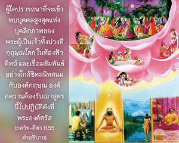
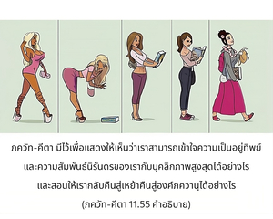
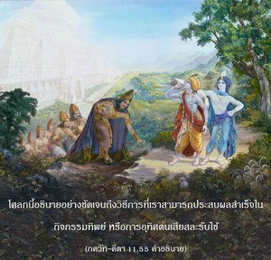

อรฺชุน ที่รัก ผู้ปฏิบัติในการอุทิศตนเสียสละรับใช้ข้าด้วยความบริสุทธิ์ใจ เป็นอิสระจากมลทินแห่งกิจกรรมเพื่อผลทางวัตถุ และการคาดคะเนทางจิต ผู้ที่ทำงานให้แก่ข้า มีข้าเป็นจุดมุ่งหมายสูงสุดในชีวิต และเป็นมิตรกับทุกๆชีวิตแน่นอนว่าเขาจะมาหาข้า




ผู้ใดปรารถนาที่จะเข้าพบบุคคลสูงสุดแห่งบุคลิกภาพของพระผู้เป็นเจ้าทั้งปวงที่ กฺฤษฺณโลก ในท้องฟ้าทิพย์ และเชื่อมสัมพันธ์อย่างใกล้ชิดสนิทสนมกับองค์กฺฤษฺณ องค์ภควานฺต้องรับเอาสูตรนี้ไปปฏิบัติดังที่พระองค์ตรัส ฉะนั้น โศลกนี้พิจารณว่าเป็นเนื้อหาสาระสำคัญของ ภควัท-คีตา ภควัท-คีตา เป็นหนังสือที่นำทางให้พันธวิญญาณผู้ปฏิบัติอยู่ในโลกวัตถุ ด้วยจุดมุ่งหมายที่จะเป็นเจ้าแห่งธรรมชาติ และไม่รู้ถึงชีวิตทิพย์อันแท้จริง ภควัท-คีตา มีไว้เพื่อแสดงให้เห็นว่าเราสามารถเข้าใจความเป็นอยู่ทิพย์ และความสัมพันธ์นิรันดรของเรากับบุคลิกภาพสูงสุดได้อย่างไร และสอนให้เรากลับคืนสู่เหย้าคืนสู่องค์ภควานฺได้อย่างไร โศลกนี้อธิบายอย่างชัดเจนถึงวิธีการที่เราสามารถประสบผลสำเร็จในกิจกรรมทิพย์ หรือการอุทิศตนเสียสละรับใช้
สำหรับงานนั้น เราควรถ่ายโอนพลังงานทั้งหมดไปยังกิจกรรมเพื่อกฺฤษฺณจิตสำนึก ดังที่กล่าวไว้ใน ภกฺติ-รสามฺฤต-สินฺธุ (1.2.255)
อนาสกฺตสฺย วิษยานฺ
ยถารฺหมฺ อุปยุญฺชตห์
นิรฺพนฺธห์ กฺฤษฺณ-สมฺพนฺเธ
ยุกฺตํ ไวราคฺยมฺ อุจฺยเต
ไม่มีผู้ใดควรทำงานอื่นใดนอกจากงานที่สัมพันธ์กับองค์กฺฤษฺณ เช่นนี้เรียกว่า กฺฤษฺณ-กรฺม เราอาจปฏิบัติกิจกรรมมากมาย แต่ไม่ควรยึดติดกับผลงานของตน ผลของงานควรทำไปเพื่อองค์กฺฤษฺณ ตัวอย่างเช่น เราอาจทำธุรกิจแต่ควรเปลี่ยนกิจกรรมนั้นมาเป็นกฺฤษฺณจิตสำนึกเราต้องทำธุรกิจเพื่อองค์กฺฤษฺณ หากองค์กฺฤษฺณทรงเป็นเจ้าของธุรกิจองค์กฺฤษฺณก็ควรได้รับความสุขกับผลกำไรของธุรกิจ หากนักธุรกิจเป็นเจ้าของเงินเป็นจำนวนแสนๆ ล้านๆ บาท และหากเราต้องถวายทั้งหมดนี้แด่องค์กฺฤษฺณเราสามารถกระทำได้ นี่คืองานเพื่อองค์กฺฤษฺณ แทนที่จะก่อสร้างอาคารสูงๆ เพื่อสนองประสาทสัมผัสของตนเอง เราสามารถก่อสร้างวัดอันวิจิตรตระการตาเพื่อองค์กฺฤษฺณอัญเชิญพระปฏิมาขององค์กฺฤษฺณ และบริหารจัดการเพื่อการรับใช้ต่อพระปฏิมา ดังที่ได้กำหนดไว้ในหนังสือแห่งการอุทิศตนเสียสละรับใช้ที่เชื่อถือได้ทั้งหมดนี้ คือ กฺฤษฺณ-กรฺม เราไม่ควรยึดติดกับผลงานของตน แต่ผลงานควรถวายให้องค์กฺฤษฺณ และควรรับเอา ปฺรสาทมฺ หรือส่วนที่เหลือจากการถวายให้องค์กฺฤษฺณแล้ว หากผู้ใดก่อสร้างอาคารใหญ่ๆ เพื่อองค์กฺฤษฺณ และอัญเชิญพระปฏิมาขององค์กฺฤษฺณมาประทับ ผู้นั้นจะไม่ถูกห้ามให้มาอยู่ในอาคาร แต่ต้องเข้าใจว่าเจ้าของอาคาร คือ องค์กฺฤษฺณ เช่นนี้เรียกว่า กฺฤษฺณจิตสำนึก อย่างไรก็ดี หากไม่สามารถสร้างวัดเพื่อองค์กฺฤษฺณ เราก็สามารถทำความสะอาดวัดให้องค์กฺฤษฺณ นั่นก็เป็น กฺฤษฺณ-กรฺม เช่นเดียวกัน หากมีที่ดินเราสามารถทำสวน ในประเทศอินเดียอย่างน้อยคนจนจะมีที่ดินหนึ่งแปลง สามารถใช้ประโยชน์ในผืนดินนั้นเพื่อองค์กฺฤษฺณ ด้วยการปลูกไม้ดอกเพื่อถวายให้องค์กฺฤษฺณ เราสามารถปลูกต้น ตุลสี เพราะว่าใบ ตุลสี มีความสำคัญมาก องค์กฺฤษฺณทรงแนะนำไว้ใน ภควัท-คีตา ว่า ปตฺรํ ปุษฺปํ ผลํ โตยมฺ องค์กฺฤษฺณทรงปรารถนาให้เราถวายใบไม้ ดอกไม้ ผลไม้ หรือน้ำเพียงเล็กน้อยแด่พระองค์ และจากการถวายเช่นนี้พระองค์จะทรงพอพระทัย ใบไม้นี้ หมายถึงใบ ตุลสี โดยเฉพาะ ดังนั้น เราจึงสามารถปลูกต้นตุลสี และรดน้ำ ฉะนั้น แม้แต่คนที่ยากจนที่สุดก็สามารถปฏิบัติการรับใช้องค์กฺฤษฺณได้ นี่คือการยกตัวอย่างว่า เราสามารถปฏิบัติในการทำงานเพื่อองค์กฺฤษฺณได้อย่างไร
คำว่า มตฺ-ปรมห์ หมายถึง ผู้พิจารณาว่าการได้มาอยู่ใกล้ชิดกับองค์กฺฤษฺณที่พระตำหนักสูงสุดของพระองค์ เป็นความสมบูรณ์สูงสุดของชีวิต บุคคลเช่นนี้ไม่ปรารถนาพัฒนาไปยังดาวเคราะห์ที่สูงกว่า เช่น ดวงจันทร์ ดวงอาทิตย์ หรือโลกสวรรค์ หรือแม้แต่โลกที่สูงสุดของจักรวาลนี้ คือ พฺรหฺมโลก หรือพรหมโลก เขาไม่หลงใหลอยู่กับสิ่งเหล่านี้ แต่ยึดมั่นเพียงที่จะย้ายไปยังท้องฟ้าทิพย์เท่านั้น และแม้ในท้องฟ้าทิพย์ เขาก็ไม่พึงพอใจที่จะกลืนเข้าไปในรัศมี พฺรหฺม-โชฺยติรฺ อันเจิดจรัส เพราะปรารถนาที่จะเข้าไปในโลกทิพย์สูงสุดชื่อว่า กฺฤษฺณโลก โคโลก วฺฤนฺทาวน ซึ่งตนเองมีความรู้ที่สมบูรณ์เกี่ยวกับโลกนี้ จึงไม่สนใจโลกอื่นๆ ดังที่ได้แสดงไว้ด้วยคำว่า มทฺ-ภกฺตห์ เขาจะปฏิบัติอย่างเต็มที่ในการอุทิศตนเสียสละรับใช้โดยเฉพาะในเก้าวิธีแห่งการปฏิบัติอุทิศตนเสียสละ เช่น การสดับฟัง การสวดภาวนา การระลึกถึง การบูชา การรับใช้พระบาทรูปดอกบัวขององค์ภควานฺ การถวายบทมนต์ การปฏิบัติตามคำสั่งของพระองค์ การเป็นมิตรกับพระองค์ และการศิโรราบทุกสิ่งทุกอย่างแด่พระองค์ เขาสามารถปฏิบัติในกระบวนการอุทิศตนเสียสละทั้งเก้าวิธีนี้ หรือแปด หรือเจ็ด หรืออย่างน้อยหนึ่งวิธี เช่นนี้จะทำให้ชีวิตเขาสมบูรณ์อย่างแน่นอน
คำว่า สงฺค-วรฺชิตห์ มีความสำคัญมาก เราไม่ควรไปคบหาสมาคมกับบุคคลผู้ต่อต้านองค์กฺฤษฺณ ไม่เพียงแต่ผู้ที่ไม่เชื่อในองค์ภควานฺเท่านั้นที่ต่อต้านองค์กฺฤษฺณ แม้แต่พวกที่ยึดติดกับกิจกรรมเพื่อผลทางวัตถุ และพวกที่คาดคะเนทางจิตก็เป็นผู้ต่อต้านองค์กฺฤษฺณเช่นกัน ดังนั้น การอุทิศตนเสียสละรับใช้ในรูปแบบที่บริสุทธิ์ได้อธิบายไว้ใน ภกฺติ-รสามฺฤต-สินฺธุ (1.1.11) ดังนี้
อนฺยาภิลาษิตา-ศูนฺยํ
ชฺญาน-กรฺมาทฺยฺ-อนาวฺฤตมฺ
อานุกูเลฺยน กฺฤษฺณานุ
ศีลนํ ภกฺติรฺ อุตฺตมา
โศลกนี้ ศฺรีล รูป โคสฺวามี กล่าวไว้อย่างชัดเจนว่า หากผู้ใดปรารถนาการอุทิศตนเสียสละรับใช้ที่บริสุทธิ์จะต้องเป็นอิสระจากมลทินทางวัตถุทั้งหมด และต้องเป็นอิสระจากการคบหาสมาคมกับบุคคลผู้ยึดติดอยู่กับกิจกรรมเพื่อผลทางวัตถุ และยึดติดอยู่กับการคาดคะเนทางจิต เมื่อเป็นอิสระจากการคบหาสมาคมที่ไม่พึงปรารถนา และจากมลทินแห่งความปรารถนาทางวัตถุเช่นนี้ เขาจะพัฒนาความรู้แห่งองค์กฺฤษฺณด้วยความชื่นชอบ เช่นนี้เรียกว่าการอุทิศตนเสียสละรับใช้ที่บริสุทธิ์ อานุกูลฺยสฺย สงฺกลฺปห์ ปฺราติกูลฺยสฺย วรฺชนมฺ (หริ-ภกฺติ-วิลาส 11.676) เขาควรคิดถึงองค์กฺฤษฺณ และปฏิบัติเพื่อพระองค์ด้วยความชื่นชอบไม่ใช่ในเชิงลบ กํส เป็นศัตรูขององค์กฺฤษฺณจากจุดเริ่มต้นแห่งการประสูติขององค์กฺฤษฺณ กํส ได้วางแผนมากมายหลายวิธีที่จะสังหารพระองค์ และเนื่องจากล้มเหลวทุกครั้ง เขาจึงคิดถึงองค์กฺฤษฺณอยู่ตลอดเวลา ดังนั้น ขณะที่ทำงาน ขณะที่รับประทานอาหาร และขณะที่นอนอยู่ กํส จะมีกฺฤษฺณจิตสำนึกตลอดเวลาในทุกๆ ด้าน แต่กฺฤษฺณจิตสำนึกเช่นนี้ไม่เป็นที่ชื่นชอบ ฉะนั้น ถึงแม้ว่า กํส จะคิดถึงองค์กฺฤษฺณวันละยี่สิบสี่ชั่วโมง แต่ถือว่าเป็นมาร และในที่สุดก็ถูกองค์กฺฤษฺณสังหาร แน่นอนว่าผู้ใดที่องค์กฺฤษฺณสังหารจะบรรลุถึงความหลุดพ้นทันที แต่นั่นไม่ใช่จุดมุ่งหมายของสาวกผู้บริสุทธิ์ สาวกผู้บริสุทธิ์ไม่ต้องการแม้แต่ความหลุดพ้น ท่านไม่ต้องการแม้แต่จะโอนย้ายไปยังโลกที่สูงที่สุด โคโลก วฺฤนฺทาวน จุดมุ่งหมายเดียวของท่าน คือ ไม่ว่าจะอยู่ที่ใดก็ขอให้ได้รับใช้องค์กฺฤษฺณ
สาวกขององค์กฺฤษฺณเป็นมิตรกับทุกๆ คน ดังนั้น ได้กล่าวไว้ตรงนี้ว่าท่านไม่มีศัตรู (นิไรฺวรห์) เป็นเช่นนี้ได้อย่างไร สาวกสถิตในกฺฤษฺณจิตสำนึกทราบว่าการอุทิศตนเสียสละรับใช้แด่องค์กฺฤษฺณเท่านั้นที่สามารถปลดเปลื้องผู้คนจากปัญหาทั้งหลายทั้งปวงของชีวิต พวกท่านมีประสบการณ์โดยตรงในเรื่องนี้ ฉะนั้น จึงปรารถนาจะแนะนำระบบกฺฤษฺณจิตสำนึกนี้แด่สังคมมนุษย์ มีตัวอย่างในประวัติสาวกขององค์ภควานฺมากมายที่เสี่ยงชีวิตเพื่อเผยแพร่พระเจ้าจิตสำนึก ตัวอย่างที่น่าชื่นชม คือ พระเยซูคริสต์ ทรงถูกพวกที่ไม่ใช่สาวกตรึงไว้บนไม้กางเขน แต่พระองค์ทรงยอมสละชีวิตเพื่อเผยแพร่พระเจ้าจิตสำนึก แน่นอนว่าเป็นเพียงผิวเผินเท่านั้นที่เข้าใจว่าพระองค์ทรงถูกสังหาร ที่ประเทศอินเดียมีตัวอย่างมากมายในทำนองเดียวกันนี้ เช่น ฐากุร หริทาส และ ปฺรหฺลาท มหาราช ทำไมจึงเสี่ยงเช่นนี้ เพราะพวกท่านปรารถนาที่จะเผยแพร่กฺฤษฺณจิตสำนึกซึ่งเป็นงานที่ยาก บุคคลในกฺฤษฺณจิตสำนึกรู้ว่าหากมนุษย์ได้รับความทุกข์ ก็เนื่องมาจากการที่พวกเขาลืมความสัมพันธ์นิรันดรกับองค์กฺฤษฺณ ดังนั้น ประโยชน์สูงสุดที่สามารถให้แก่สังคมมนุษย์ คือ ปลดเปลื้องเพื่อนมนุษย์จากปัญหาทางวัตถุทั้งหลายทั้งปวง สาวกผู้บริสุทธิ์ปฏิบัติในการรับใช้องค์ภควานฺด้วยวิธีนี้ บัดนี้ เราสามารถจินตานาการได้ว่า องค์กฺฤษฺณทรงมีพระเมตตาเพียงไรต่อพวกที่ปฏิบัติตนรับใช้พระองค์ ยอมเสี่ยงทุกสิ่งทุกอย่างเพื่อพระองค์ ดังนั้น แน่นอนว่าบุคคลเช่นนี้ต้องบรรลุถึงโลกสูงสุดหลังจากออกจากร่างนี้ไป
โดยสรุปรูปลักษณ์จักรวาลขององค์กฺฤษฺณซึ่งเป็นปรากฏการณ์ไม่ถาวร และรูปลักษณ์แห่งกาลเวลาที่กลืนกินทุกสิ่งทุกอย่าง และแม้แต่รูปลักษณ์แห่งพระวิษฺณุสี่กรองค์กฺฤษฺณนั้นทรงเป็นผู้แสดงให้เห็นทั้งหมด ฉะนั้น องค์กฺฤษฺณทรงเป็นแหล่งกำเนิดของปรากฏการณ์ทั้งหลายเหล่านี้ องค์กฺฤษฺณทรงไม่ใช่เป็นปรากฏการณ์ของ วิศฺว-รูป องค์เดิม หรือพระวิษณุเท่านั้น องค์กฺฤษฺณยังทรงเป็นแหล่งกำเนิดของรูปลักษณ์ทั้งหมด มีพระวิษณุเป็นร้อยๆ พันๆ องค์ แต่สำหรับสาวกไม่มีรูปลักษณ์ใดขององค์กฺฤษฺณที่จะมีความสำคัญนอกจากรูปลักษณ์เดิมสองกร ศฺยามสุนฺทร ใน พฺรหฺม-สํหิตา ได้กล่าวไว้ว่าพวกที่ยึดมั่นอยู่กับรูปลักษณ์ ศฺยามสุนฺทร แห่งองค์กฺฤษฺณด้วยความรัก และด้วยการอุทิศตนเสียสละ จะสามารถเห็นพระองค์เสมอภายในหัวใจ และสามารถเห็นทุกสิ่งทุกอย่าง ดังนั้น เราควรเข้าใจว่าคำอธิบายของบทที่สิบเอ็ดนี้คือรูปลักษณ์แห่งองค์ศฺรีกฺฤษฺณ เป็นเนื้อหาสาระสำคัญ และสูงที่สุด